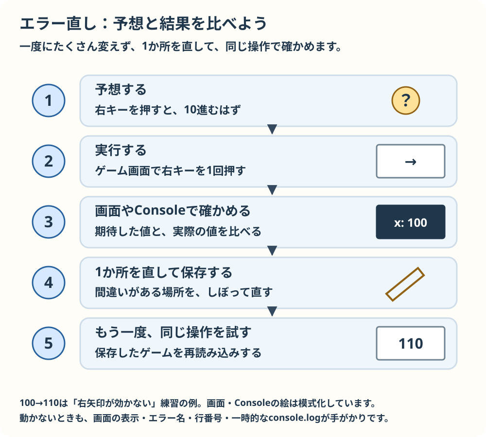
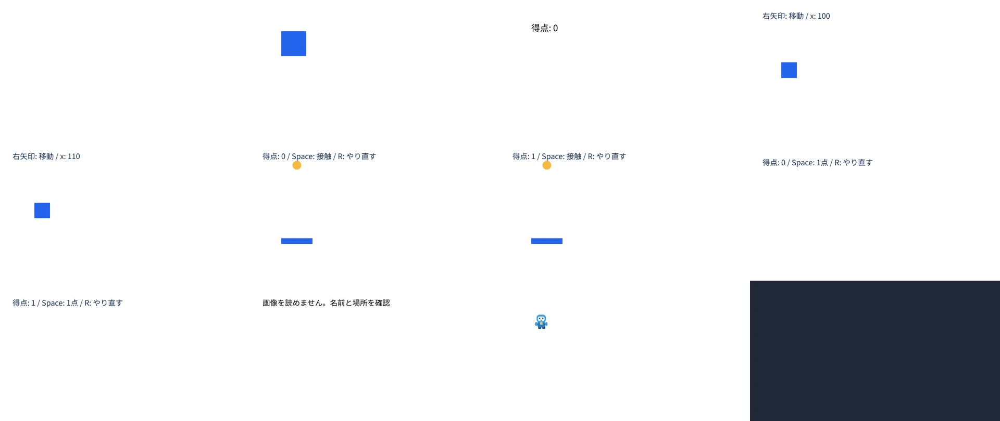
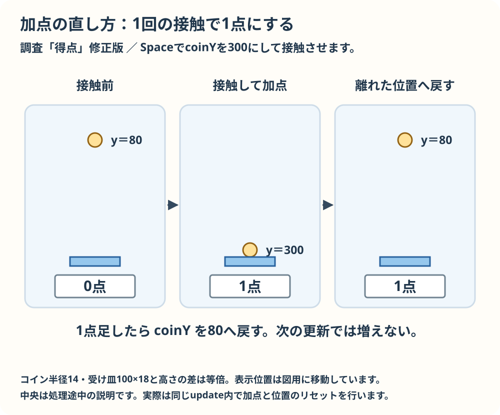

こわれた見本を調べて直す
予想してから見本を開き、画面やConsoleで確かめます。各課題のZIPを展開したフォルダーで1か所を直して保存し、ゲーム画面を再読み込みします。画像の課題のZIPには画像も入っています。
Consoleはブラウザーの開発者ツールにあります。多くのWindowsブラウザーではF12、MacではOption + Command + Iで開き、Consoleを選べます。画面が止まったらエラーの名前と行番号を見ます。入力はゲーム画面をクリックしてから試します。

まず期待する動きを予想し、実際に操作して比べます。画面やConsoleの値を手がかりに、1か所を直して保存しましょう。再読み込みして同じ操作を試すと、直ったか確かめられます。
1 青い四角が表示されない
直す前と直した後を図で見る
開いた ( に対応する ) がない
実行を始める前に止まる。
(100,100)から幅80・高さ80を塗る
閉じる ) を足すと四角が出る。
ゲーム画面とコードの前後を見る

直した後の見本
ctx.fillRect(100, 100, 80, 80;
変わったコードの一例（script.js）ctx.fillRect(100, 100, 80, 80);
見本で確かめること
青い四角が出るはずです。
保存してゲーム画面を更新する（動画）
index.html を再読み込みします。ZIPを展開してできたフォルダーでindex.htmlを開きます。こわれた見本の3ファイルが入っています。
WindowsでZIPを展開する（動画）
青い四角が出るはずです。画面とConsoleを見て、どこで読み取れなくなったか予想します。
ヒント1
ConsoleのSyntaxErrorと行番号を見ます。
ヒント2
fillRectの引数を囲む括弧を数えます。
答えと変更箇所
fillRectの末尾に閉じ括弧を1つ戻します。
変更前後の比較を見る
比較（読むための表示）
括弧を閉じる
作業用フォルダーの script.js で、次の行を探して置き換えます。
置き換える範囲
ctx.fillRect(100, 100, 80, 80;置き換えるコード
ctx.fillRect(100, 100, 80, 80);fillRect() は左上の横・縦の位置と幅・高さを受け取ります。) で引数を閉じてから ; で文を終えると、(100, 100) に幅80・高さ80の四角を描けます。
直したら保存し、作業用フォルダーのゲーム画面を再読み込みして、期待した動きをもう一度確かめます。
2 得点が表示されない
直す前と直した後を図で見る
score ≠ scroe
似たつづりでも別の名前。
"得点: " + score → "得点: 0"
定義した変数の値0を表示する。
ゲーム画面とコードの前後を見る
直した後の見本
ctx.fillText("得点: " + scroe, 100, 100);
変わったコードの一例（script.js）ctx.fillText("得点: " + score, 100, 100);
見本で確かめること
得点0が表示されるはずです。
ZIPを展開してできたフォルダーでindex.htmlを開きます。こわれた見本の3ファイルが入っています。
得点0が表示されるはずです。Consoleでエラーの種類と名前を確かめます。
ヒント1
ReferenceErrorが指す名前を探します。
ヒント2
宣言した名前と表示するときの綴りを一文字ずつ比べます。
答えと変更箇所
scroeをscoreに直します。
変更前後の比較を見る
比較（読むための表示）
変数の名前をそろえる
作業用フォルダーの script.js で、次の行を探して置き換えます。
置き換える範囲
ctx.fillText("得点: " + scroe, 100, 100);置き換えるコード
ctx.fillText("得点: " + score, 100, 100);score は前に0として用意した変数です。宣言と同じ綴りで取り出し、文字「得点: 」とつないで (100, 100) に描きます。
直したら保存し、作業用フォルダーのゲーム画面を再読み込みして、期待した動きをもう一度確かめます。
3 右矢印が効かない
直す前と直した後を図で見る
直した後の見本
if (event.code === "ArrowRigth") { x += 10; draw(); }
変わったコードの一例（script.js）if (event.code === "ArrowRight") { x += 10; draw(); }
見本で確かめること
右矢印を1回押すとxが100から110へ変わるはずです。
ZIPを展開してできたフォルダーでindex.htmlを開きます。こわれた見本の3ファイルが入っています。
右矢印を1回押すとxが100から110へ変わるはずです。
ヒント1
開発者ツールのConsoleを開き、イベントの中に一時的にconsole.log(event.code)を入れて押します。
ヒント2
Consoleの値と条件の文字を比べます。確認後、追加したconsole.logは消します。
答えと変更箇所
ArrowRigthをArrowRightに直します。
変更前後の比較を見る
比較（読むための表示）
右キーの名前を直す
作業用フォルダーの script.js で、次の行を探して置き換えます。
置き換える範囲
if (event.code === "ArrowRigth") { x += 10; draw(); }置き換えるコード
if (event.code === "ArrowRight") { x += 10; draw(); }event.code が "ArrowRight" と同じとき、x += 10 で位置を10増やし、draw() で描き直します。初めの100から右キー1回で110になります。
直したら保存し、作業用フォルダーのゲーム画面を再読み込みして、期待した動きをもう一度確かめます。
4 触れている間に点が増え続ける
直す前と直した後を図で見る
直した後の見本
if (coinY >= 300) { score += 1; }
変わったコードの一例（script.js）if (coinY >= 300) { score += 1; coinY = 80; }
見本で確かめること
Spaceを1回押すと、得点が1点だけ増えます。
ZIPを展開してできたフォルダーでindex.htmlを開きます。こわれた見本の3ファイルが入っています。
Spaceを1回押し接触させます。1点だけ増えるはずが、増え続ける理由を予想します。
ヒント1
updateは何度も動きます。接触後のcoinYを画面または一時的なconsole.log(coinY)で確かめます。
ヒント2
加点後も条件が真のままです。確認後、追加したconsole.logは消します。
答えと変更箇所
得点を増やした後にcoinYを80へ戻します。
変更前後の比較を見る
比較（読むための表示）
得点の後に位置を戻す
作業用フォルダーの script.js で、次の行を探して置き換えます。
置き換える範囲
if (coinY >= 300) { score += 1; }置き換えるコード
if (coinY >= 300) { score += 1; coinY = 80; }coinY >= 300 のとき得点を1増やし、coinY = 80 で位置を戻します。次の更新では条件が偽になり、同じ接触で点が増え続けません。

接触したままだと、更新のたびに点が増えてしまいます。1点足したら、コインを離れた位置へ戻しましょう。次の更新では接触条件が偽になり、点は増えません。
直したら保存し、作業用フォルダーのゲーム画面を再読み込みして、期待した動きをもう一度確かめます。
5 やり直しても得点が残る
直す前と直した後を図で見る
直した後の見本
function start() { }
変わったコードの一例（script.js）function start() { score = 0; }
見本で確かめること
Spaceで得点してRを押すと0に戻るはずです。
ZIPを展開してできたフォルダーでindex.htmlを開きます。こわれた見本の3ファイルが入っています。
Spaceで得点してRを押すと0に戻るはずです。
ヒント1
startが呼ばれる直前と直後のscoreを画面か一時的なconsole.logで確認します。
ヒント2
startの中で何を初期化しているか見ます。確認後、追加したconsole.logは消します。
答えと変更箇所
startの中でscoreを0にします。
変更前後の比較を見る
比較（読むための表示）
再挑戦で得点を戻す
作業用フォルダーの script.js で、次の行を探して置き換えます。
置き換える範囲
function start() { }置き換えるコード
function start() { score = 0; }start() が呼ばれるたびに score に0を入れます。R の操作は start() の後に draw() を呼ぶので、画面も0に更新されます。
直したら保存し、作業用フォルダーのゲーム画面を再読み込みして、期待した動きをもう一度確かめます。
6 青い画像が表示されない
直す前と直した後を図で見る
bleu と blue は別の文字列
画像の名前と場所を確認する。
src = "assets/player-blue.png"
読めた画像を(100,100)へ描く。
ゲーム画面とコードの前後を見る
直した後の見本
image.src = "assets/player-bleu.png";
変わったコードの一例（script.js）image.src = "assets/player-blue.png";
見本で確かめること
青い画像が出るはずです。
ZIPを展開してできたフォルダーでindex.htmlを開きます。こわれた見本の3ファイルと画像が入っています。
青い画像が出るはずです。失敗時の表示を見て原因を予想します。
ヒント1
assetsフォルダーの実際のファイル名を確認します。
ヒント2
srcの名前と一文字ずつ比べます。
答えと変更箇所
player-bleu.pngをplayer-blue.pngに直します。
変更前後の比較を見る
比較（読むための表示）
画像の場所を直す
作業用フォルダーの script.js で、次の行を探して置き換えます。
置き換える範囲
image.src = "assets/player-bleu.png";置き換えるコード
image.src = "assets/player-blue.png";src は読み込む画像の場所です。assets 内の実際の名前 player-blue.png と一致させます。読み込みが成功すると onload が画像を描きます。
直したら保存し、作業用フォルダーのゲーム画面を再読み込みして、期待した動きをもう一度確かめます。
最初の「青い四角が表示されない」のこわれたscript.jsだけは、練習用に意図して構文エラーを含めています。